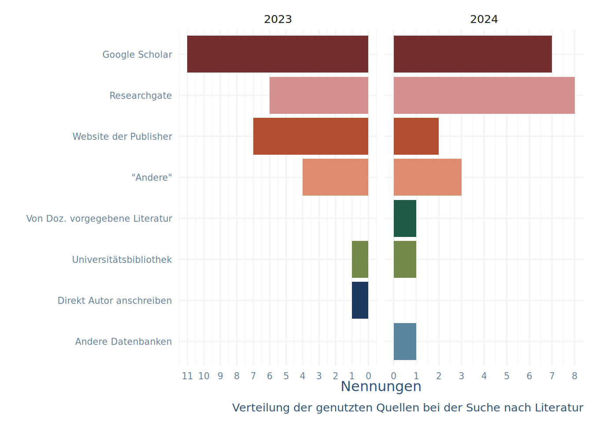
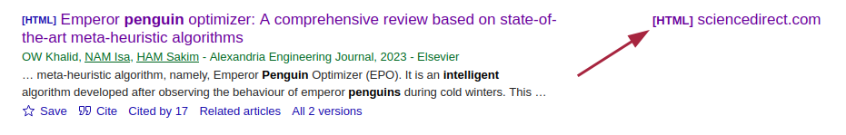
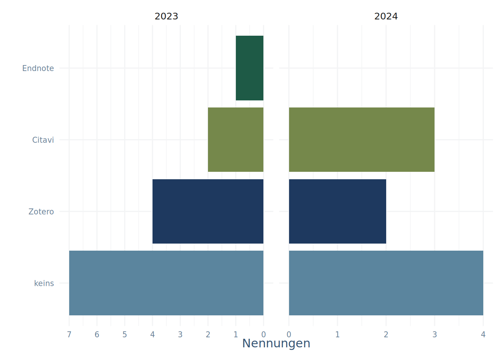

Literatur sammeln
Nachdem ich eine Reihe von Papern gefunden habe, die mich interessieren, muss ich mir diese irgendwie organisieren, um sie lesen zu können.
Leider hat, wie Ihr bestimmt bereits gemerkt habt, unsere Uni nicht bei allen Publishern für alle Journals einen Zugang inne.
Volltext-Versionen finden
Wie kann ich also vorgehen, um ein Paper zu organisieren? In der Umfrage wurden die in Abbildung 4.1 angegebenen Wege zur Organisation von Publikationen angegeben.
Mit den Punkten sind die folgenden Vorgehensweisen gemeint:
Google Scholar: Wenn ein Paper in Google Scholar gefunden ist, wird oft ein Link zu einem PDF angezeigt. Ein Beispiel ist in Abbildung 4.2 zu sehen. Scholar nutzt übrigens auch oft Researchgate um Links zu PDF-Versionen anzubieten.
Website der Publisher: Der Trend geht immer mehr zu Open Access Formaten und manche Journals werden auch über die UB bereitgestellt. Ein Besuch der Publisher Website (geht am schnellsten mit “https://doi.org/
”) kann also schon zum gewünschten Ergebnis führen. OA-Paper werden aber auch schon von Google gelistet Researchgate: Viele Autor:innen laden ihre Arbeiten auf Researchgate als Volltext hoch, auch wenn das Journal eigentlich nicht OA ist.
Direkt Autor anschreiben: Zuletzt funktioniert es oft, dem Kontaktautoren eine Email zu schreiben. Mit der Veröffentlichung erhalten Autor:innen bei vielen Journals eine PDF, die sie oft gern weitergeben. Über Researchgate lässt sich eine derartige Anfrage übrigens auch stellen.

Neben diesen Varianten sind noch die folgenden zwei Punkte zu nennen:
Unpaywall: Ein Service, der offene Zugänge zu Publikationen sammelt und hier Browser-Extensions zur Verfügung stellt, die anzeigen, wenn ein Paper kostenfrei zugänglich ist.
Literaturverwaltungsprogramme: Viele Literaturverwaltungsprogramme nutzen Verzeichnisse von offen zugänglichen Publikationen, die einfach mit einer DOI zugägnlich gemacht sind. Bei Hinzufügen einer Publikation via DOI oder Browser-Extension wird bei Zotero zum Beispiel direkt versucht, eine PDF-Version der Arbeit herunterzuladen.
Gerade der letzte Punkt löst noch ein zweites Problem und zwar die Frage, wie ich den Überblick über die gesammelten Studien behalte.
Den Überblick behalten
Nachdem wir nun interessante Paper gefunden und uns vielleicht die Volltexte organisiert haben entsteht irgendwann die Frage: Wie behalte ich den Überblick?
Die Lösung dieses Problem sind Literaturverwaltungsprogramme, zu deren Nutzung in der Umfrage ein Item präsentiert wurde - die Ergebnisse sind in Abbildung 4.3 zu sehen.

Viele von Euch haben sich also noch nicht zur Nutzung durchgerungen, deswegen hier die Vorteile:
- Ihr behaltet den Überblick und könnt Referenzen organisieren
- Ihr könnt das Tool beim Suchen mit Browser-Extensions die Referenz abspeichern lassen
- Ihr könnt Euch im Verwaltungs-Tool Tags und Notizen zu machen
Und der wichtigste:
- Das Tool formatiert Literaturhinweise für Euch (!)
An Tools aus dieser Familie gibt es eine ganze Reihe, in Tabelle 4.1 sind ein paar vorgestellt. Hier nutzen wird Zotero, da es auf allen Rechnern funktioniert, geteilte Bibliotheken erlaubt und Open Source ist. Eine Anleitung zur Nutzung mit den gebräuchlisten Word-Prozessoren findet Ihr hier.
| Name | Anbieter | Läuft auf | Lizenzmodell |
|---|---|---|---|
| Zotero | Open Source Community | allem | Open Source |
| Mendeley | Elsevier | Windows, macOS, Linux, Android, iOS | Freeware |
| Citavi | Swiss Academic Software | Windows | Bezahlmodell - von CAU gestellt |
| Endnote | Clarivate | Windows, macOS | Bezahlmodell |
Aufgabe
Installiert Zotero und den auf der selben Seite angebotenen Connector, sofern Ihr das noch nicht habt
Fügt dieses Paper zu Eurer Sammlung hinzu
Erstellt ein Dokument im Textverarbeitungsprogramm Eures Vertrauens, in dem Ihr das Paper zitiert. Lasst Euch eine Reference-Liste mit APA-Formatierung erstellen.